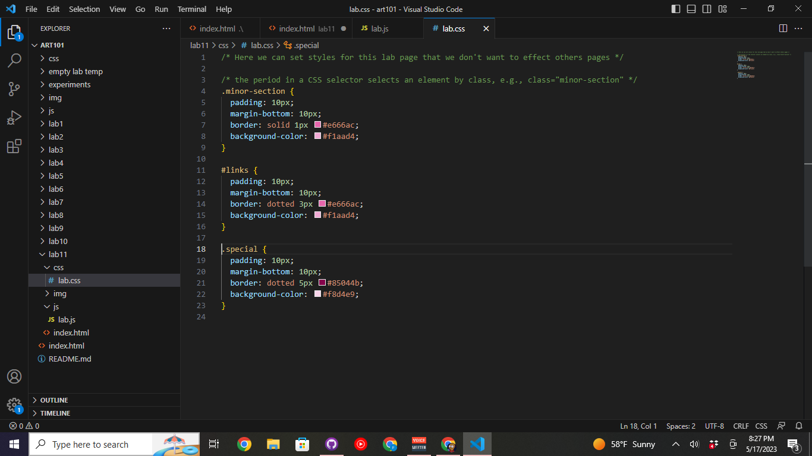
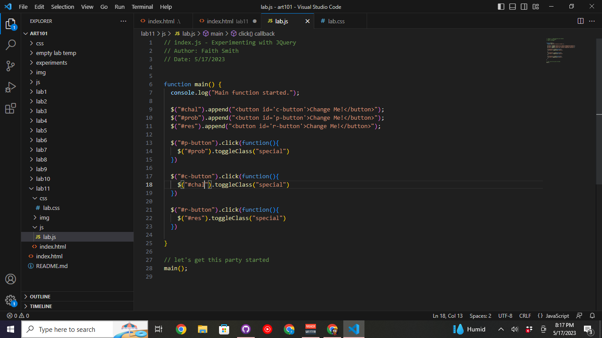

Lab 11 - Libraries and JQuery
Challenges
The challenge of this lab is to work with a partner to experiement with JQuery and expand upon the possiblities that it gives Javascript.
Problems
A problem we experienced was getting my special div to work, but in the end I was just misnaming the div.
Results
At the end we were able to complete the Lab and fix all the issues that arose.
Script Output
Screenshots
A screenshot of the HTML used to create the webpage
A screenshot of the Javascript written in Visual Studio Code creating a function.